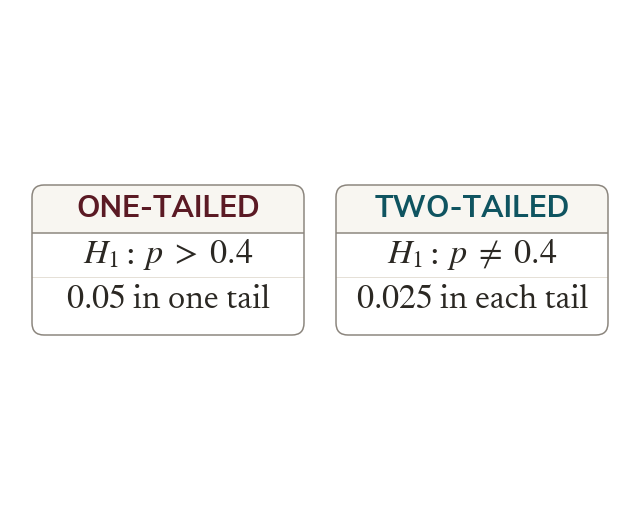
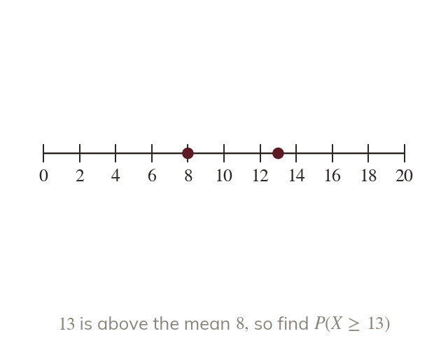
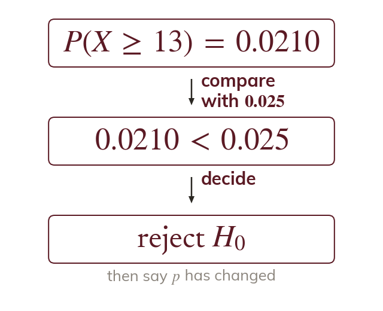
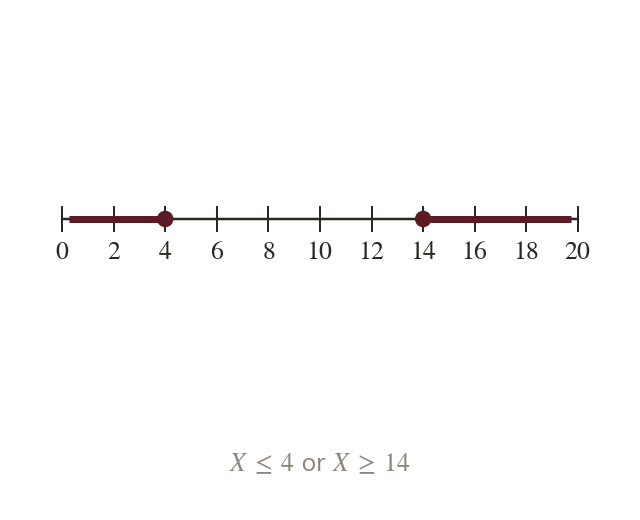
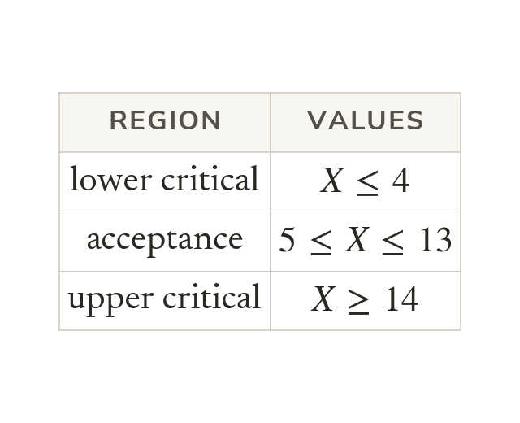
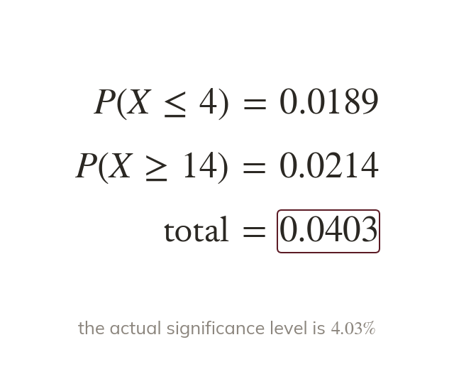

Either direction
For : a change up or down counts as evidence. So half the significance level goes in each tail, each for a test.
A two-tailed test checks a claim that a proportion has changed without saying which way, such as whether a coin or a spinner is biased. It brings together every step of the chapter, from the hypotheses and the tails to critical regions and the actual significance level.
Work down the page at your own pace. Write every answer in your book first, then click to check it.
Read each card, then follow the worked examples one step at a time.

For : a change up or down counts as evidence. So half the significance level goes in each tail, each for a test.

Work out the mean np under and compare the observed value with it. Above the mean, find and below it, find

Compare the tail probability with half the significance level. For ~ and successes, which is less than
Pick an answer. If it's wrong, the feedback tells you which mistake it was.
Write the blanks in your book first, then tap each one to check.
Read each card, then follow the worked examples one step at a time.

Find the lower region with probability at most half the level, then the upper region the same way. Reject if the observed value lies in either one.

Every value between the two critical regions is in the acceptance region. An observed value there gives no reason to reject

Add the probabilities of the two critical regions. For X ~ at it is
Pick an answer. If it's wrong, the feedback tells you which mistake it was.
Write the blanks in your book first, then tap each one to check.
Finished? Next lesson: S7.2 Finding Critical Values.
For each skill, tap the one that is true for you today. Your Revise pages start with anything you mark Not yet.
Your ratings are saved on this device only.
Log in, then search for a code to practise that skill.